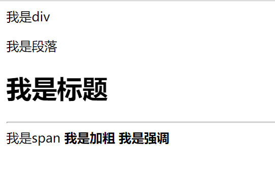
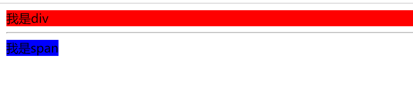
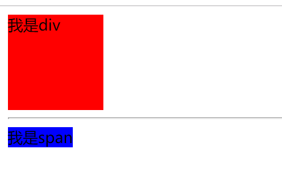
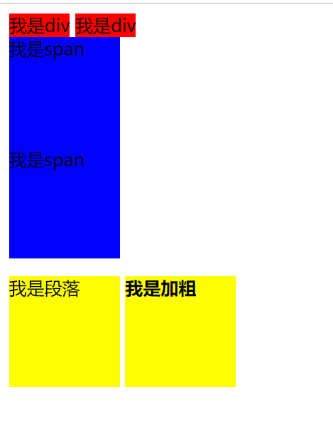

原文连接:https://www.cnblogs.com/ruigege0000/p/11355584.html
一、CSS显示模式
1.在HTML中HTML将所有的标签分为两类，分别是容器类和文本级。在CSS中CSS也将所有的标签分为两类，分别是块级元素和行内元素
2.什么是块级元素呢？什么是行内元素？
（1）块级元素会独占一行
（2）行内元素不会独占一行
3.块级元素
p div h ul ol dl li dt dd
行内元素
span buis stong em ins del
4.记忆攻略：所有的容器级加上p标签都是块级元素；所有的文本级除了p标签，都是行内元素。
5.例子
<div>我是div</div>
<p>我是段落</p>
<h1>我是标题</h1>
<hr>
<span>我是span</span>
<b>我是加粗</b>
<strong>我是强调</strong>

6.块级元素和行内元素的区别
（1）块级元素
如果没有设置宽度，那么默认和父元素一样宽；如果设置了宽度，那么就按照设置的来显示。
（2）行内元素
如果没有设置宽度，那么默认和内容一样宽；如果设置了宽度，也没有，是不可以设置长度和宽度的。
例子：公共代码
<div>我是div</div>
<hr>
<span>我是span</span>
先看看默认的
div{
background: red;
}
span{
background: blue;
}
再来看看设置好了的
div{
background: red;
width: 100px;
height:100px;
}
span{
background: blue;
width: 100px;
height:100px;
}

上面两个字例子符合我们预期
但是现在我们提出问题：要是想要既不独占一行，又可以设置高度和宽度？
我们引出“行内块级元素”
7.行内块级元素
特点：既不独占一行又可以设置宽度高度
这是img标签
例子：
image{
width: 50px;
height:50px;
}
.........省略代码......
<img src="image\play_tennis.jpg" alt="">
<img src="image\play_tennis.jpg" alt="">
二、CSS元素显示模式转换
给标签设置属性
display:值；
值的范围：inline代表转换为行内标签；block代表转换为块级标签；inline-block代表转换为行内块级标签
div{
display: inline;/*转换为行内的标签*/
background: red;
height: 100px;
width: 100px;
}
span{
display: block;/*转换为块级标签*/
background: blue;
height: 100px;
width: 100px;
}
.c{
display: inline-block;/*转换为块级行内标签*/
background: yellow;
height: 100px;
width: 100px;
}
.........省略代码........
<div>我是div</div>
<div>我是div</div>
<span>我是span</span>
<span>我是span</span>
<p class="c">我是段落</p>
<b class="c">我是加粗</b>

2.快捷键
di+table键：display: inline;
db+table键：display: block;
dib+table键：display: inline-block;
三、源码：
d91_CSS_display_mode.htm
d92_CSS_display_mode_transform.html
地址:
https://github.com/ruigege66/HTML_learning/tree/master
2.CSDN：https://blog.csdn.net/weixin_44630050（心悦君兮君不知-睿）
3.博客园：https://www.cnblogs.com/ruigege0000/
4.欢迎关注微信公众号：傅里叶变换，后台回复“礼包”获取Java大数据学习视频礼